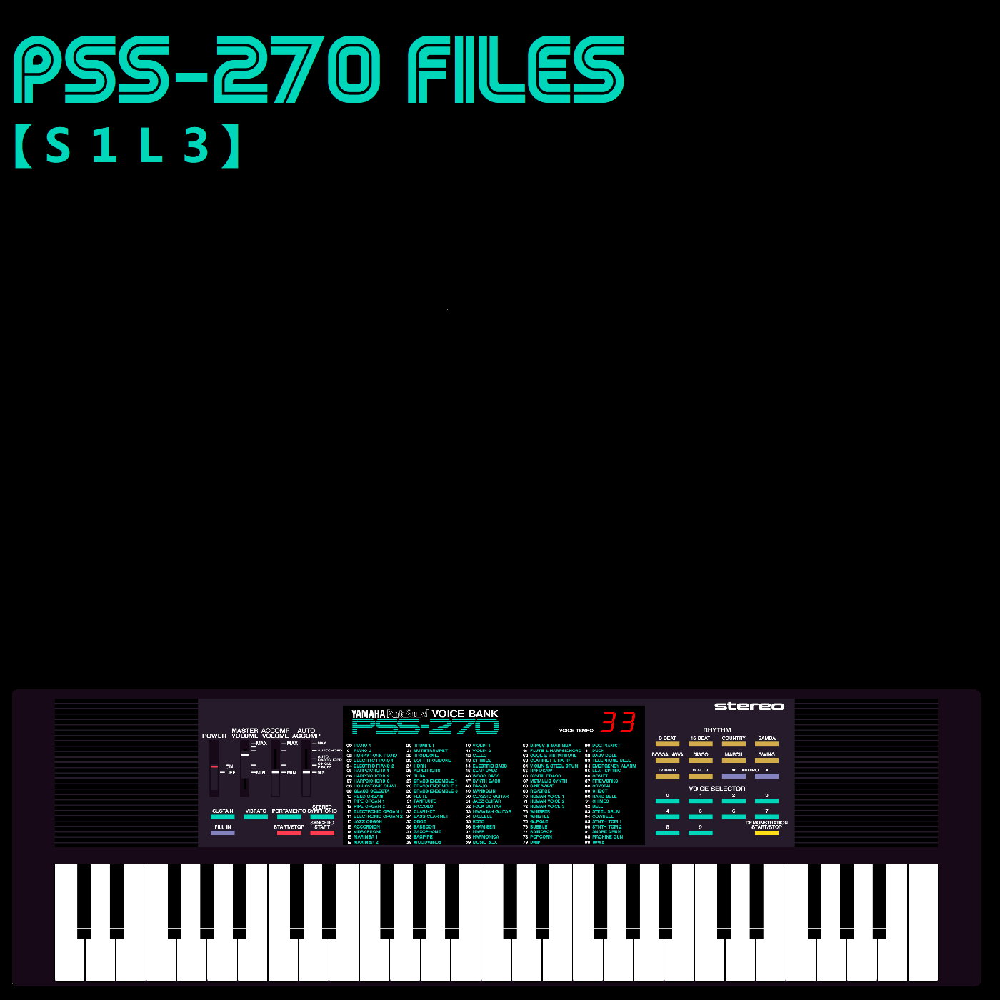

The PSS-270 Files |
|||||||||||||||||||||||||||||||
|

You've heard the phrase, "Everybody's gotta start somewhere!" Before I acquired proper MIDI keyboards and decent production software, as well as a decent computer (from memory I believe most of these were done on a PC running a single core Intel Celeron with at most 1GB RAM) I had a Yamaha PSS-270 keyboard and a program called Magix Music Maker. Using nothing but the PSS-270 and the sounds available to me in Magix (including a quite beefy impressive distortion) I made a handful of songs. The PSS-270 is from 1986, just to set expectations, and it (or mine at least) only had RCA outputs which I ran straight into the computers Line In, so it wont sound amazing. The quality of what I was able to do at the time beyond write the music, was limited. It also, at the time, never occurred to me to save the source files or back things up beyond the final product. I was still learning and an idiot. I have done what I can in more modern decent software to clear them up and bring out the best sound that I can. There will be, and are, audio imperfections. Partly due to the editing process of clearing up the tracks and enhancing certain sections, but also because some of the songs appear to use slowed down (time stretched) drum beats and clearly Magix and/or my computer couldn't keep up, they sounded glitched and out of time. At this point, nothing I can do about that. |
|
||||||||||||||||||||||||||||||